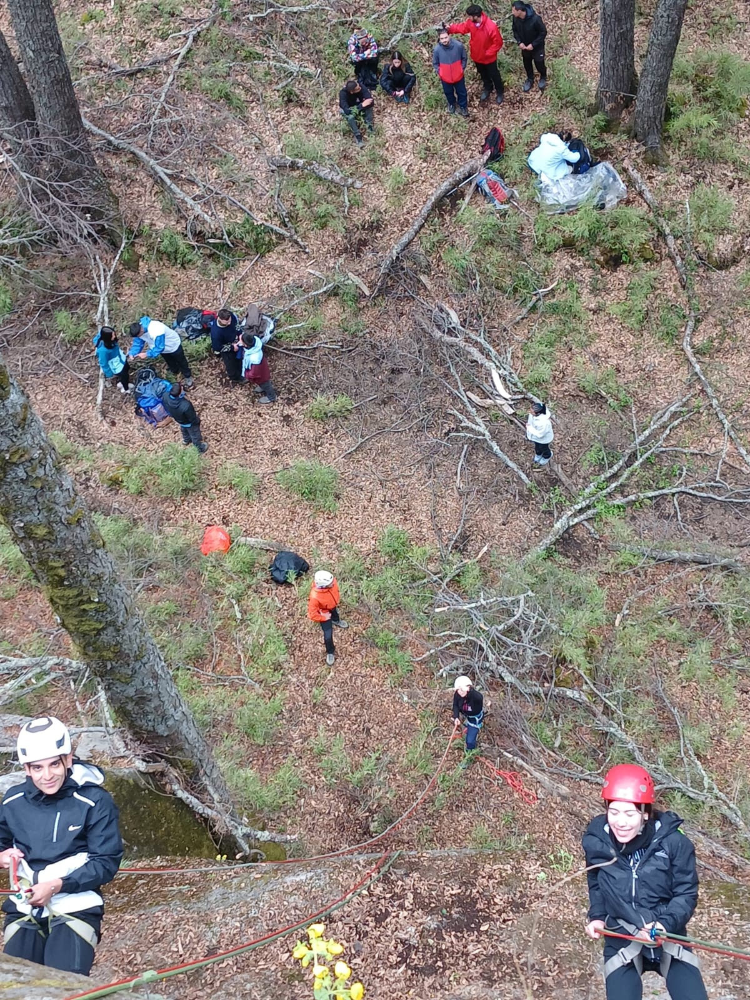
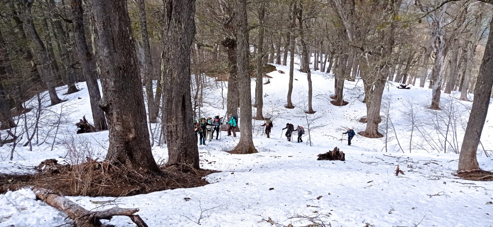
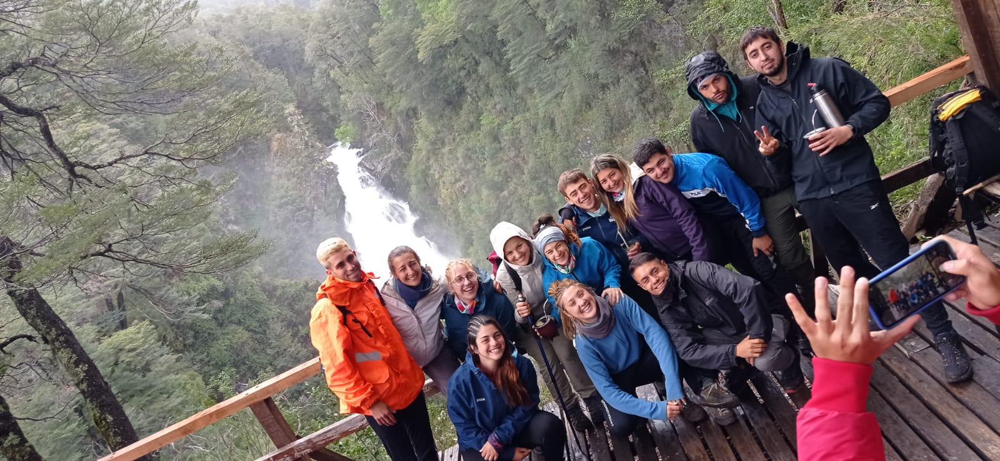
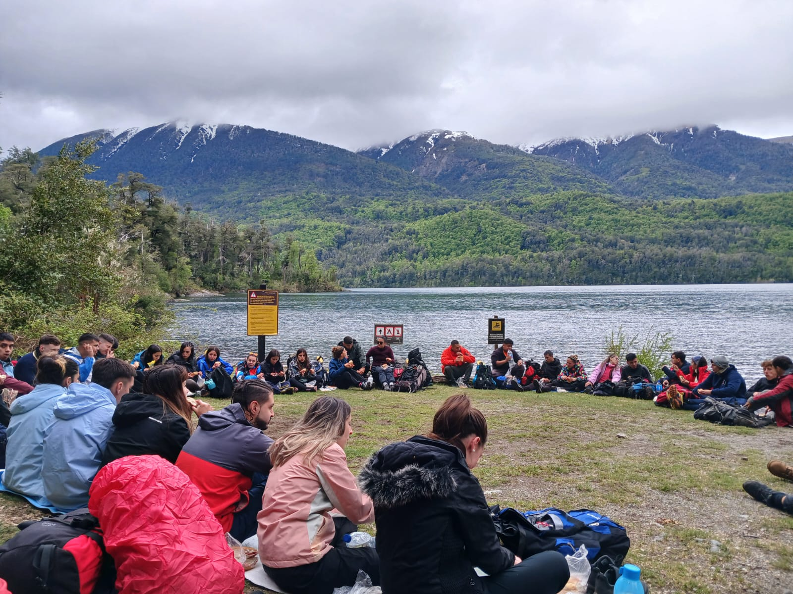
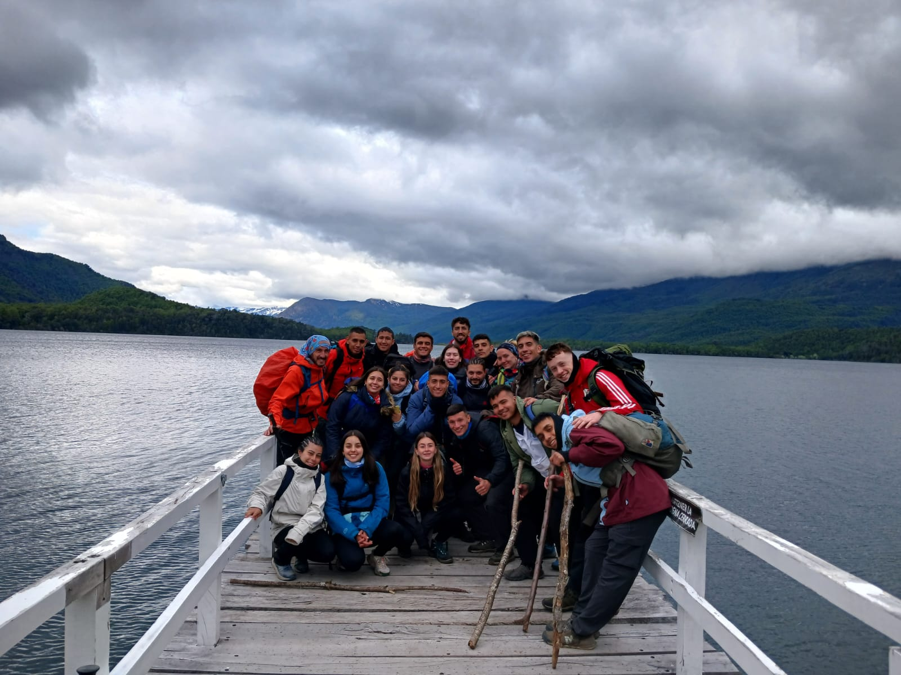
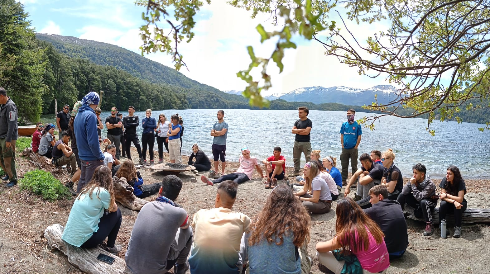
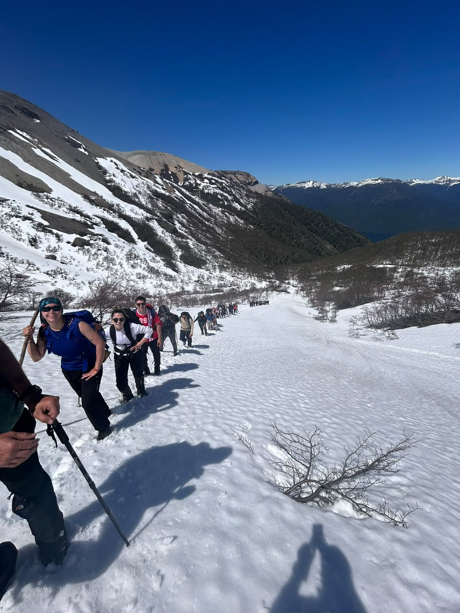
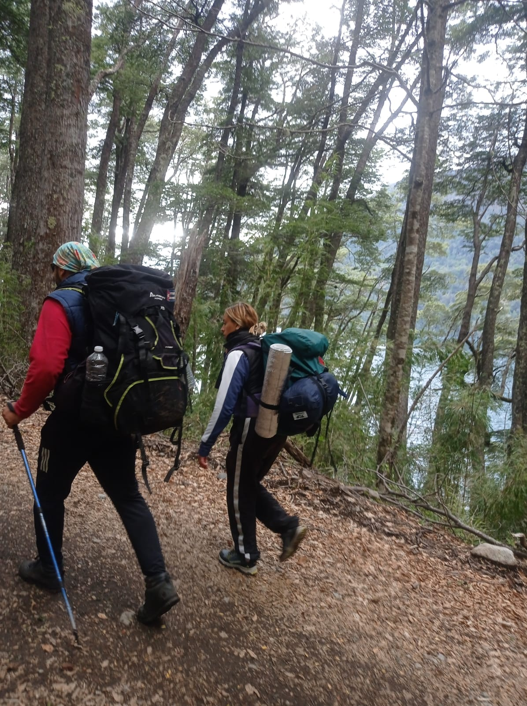

🧗 Rappel
Descenso controlado con arnés y mosquetón en paredes naturales, trabajando confianza y seguridad.
Preparando la expedición...
La salida educativa a San Martín de los Andes representa una oportunidad única para aprender en contacto directo con la naturaleza. Durante nueve días realizaremos actividades de aventura, convivencia, educación ambiental y trabajo en equipo en algunos de los paisajes más importantes de la Patagonia Argentina.
Días de Expedición
Toca para abrir ✉️Una vivencia ininterrumpida de aprendizaje, pernoctes y trabajo en equipo en terreno patagónico.
Destinos Principales
Toca para abrir ✉️Exploración técnica en Hua Hum, Cascada Chachín, Lago Queñi y el ascenso al Cerro Mallo.
Ascenso al Cerro Mallo
Toca para abrir ✉️Jornada física exigente cruzando bosque de lengas y pedreros hasta la cumbre.
Noches en Carpa Agreste
Toca para abrir ✉️Campamento agreste a orillas del Lago Queñi con organización autónoma y mínimo impacto.
Cada jornada representa una nueva aventura. El siguiente itinerario detalla la planificación del viaje.
Cada actividad fue elegida para desarrollar habilidades físicas, fortalecer el trabajo en equipo y fomentar el respeto por el entorno natural.

Descenso controlado con arnés y mosquetón en paredes naturales, trabajando confianza y seguridad.

Recorridos de montaña interpretando la flora y fauna autóctona del Parque Nacional Lanín.

Caminata inmersa en la Selva Valdiviana hasta uno de los saltos de agua más imponentes.

Espacio a orillas del agua ideal para el almuerzo y actividades grupales de integración.

Pernocte de dos noches en carpa en un ambiente agreste, afianzando la convivencia comunitaria.

Surgentes naturales de agua termal en medio del bosque para reconectar y reponer energías.

Travesía exigente hacia la cumbre superando desniveles y transitando senderos de alta montaña.

Cooperación activa con el personal del Parque Nacional en proyectos de conservación ambiental.
Un grupo de profesionales comprometidos con la seguridad y el aprendizaje de cada estudiante. Profesores de la carrera, docentes de materias específicas que articulan los contenidos del viaje con el currículo, guías especializados certificados en actividades al aire libre y coordinadores logísticos responsables del transporte, alojamiento y la organización general.
Wi-Fi a bordo durante el trayecto en micros de larga distancia RoxTour.
Suministro eléctrico por grupo electrógeno disponible únicamente por momentos programados.
Comunicación permanente con guardaparques, hosterías y bases operativas durante todo el viaje.
Menos pantalla, más naturaleza y más vínculos reales con los compañeros de expedición.
Canal de comunicación abierto para las familias a través de la sede del Instituto.
Rutas y cronogramas ajustables a las condiciones meteorológicas y disposiciones de Parques.
Seleccioná los elementos indispensables para la supervivencia en Hua Hum. Podés arrastrarlos o hacerles click.
Arrastrá tu equipo acá (o hacé clic)
Demostrá tus conocimientos técnicos. Un solo error te obligará a reiniciar el test de acreditación para obtener tu Pasaporte al Bosque.
Seleccioná o pasá el cursor sobre los puntos del mapa de ruta para desplegar la información.
Al no poseer antenas comerciales en el paraje, la zona no cuenta con señal telefónica habitual. El equipo docente mantiene comunicación continua mediante radios VHF enlazadas con Guardaparques y hosterías locales. Además, existe un protocolo de reporte diario hacia la administración central del Instituto Dickens para mantener informadas a las familias.
El campamento de Hua Hum cuenta con baños estructurados, zona de cocina y espacios de reunión comunitaria. El suministro de agua caliente está organizado por turnos mediante calderas y la electricidad es provista por un grupo electrógeno con horarios restringidos de funcionamiento.
Todas las actividades de montaña, el ascenso al Cerro Mallo y la travesía al Lago Queñi están condicionadas al parte meteorológico oficial de Parques Nacionales. Ante alertas de tormenta o viento, se activan de inmediato rutas y actividades alternativas en zonas protegidas asegurando el bienestar del grupo.